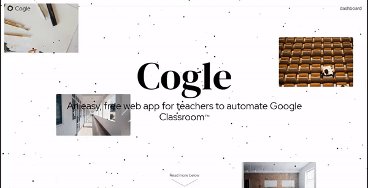

Hi, I'm Lance
Student
Programmer
Graphic designer
Researcher
Howdy! I'm currently studying Astronomy at the University of Texas @ Austin. I do debate, robotics and competitive programming. I plan on pursuing a PhD in Astrophysics

I do programming as a passion. I do C++, full-stack web development, and numerous other minor skills. I primarily work with C++ developing desktop applications for my own usage, but I do web apps as well.
I've been using Adobe Premiere, Photoshop, and Illustrator since I was in 6th grade. I focus on web design, so everything from brand design to logos on the web. I like to specialize in minimalist and contemporary designs.

My intended career is research in Astrophysics. Though, I'm interested researching in other STEM fields such as Computer Science, Biology, Public Health, and Statistics. I'm currently working on simulating dust photometrically in Scala.